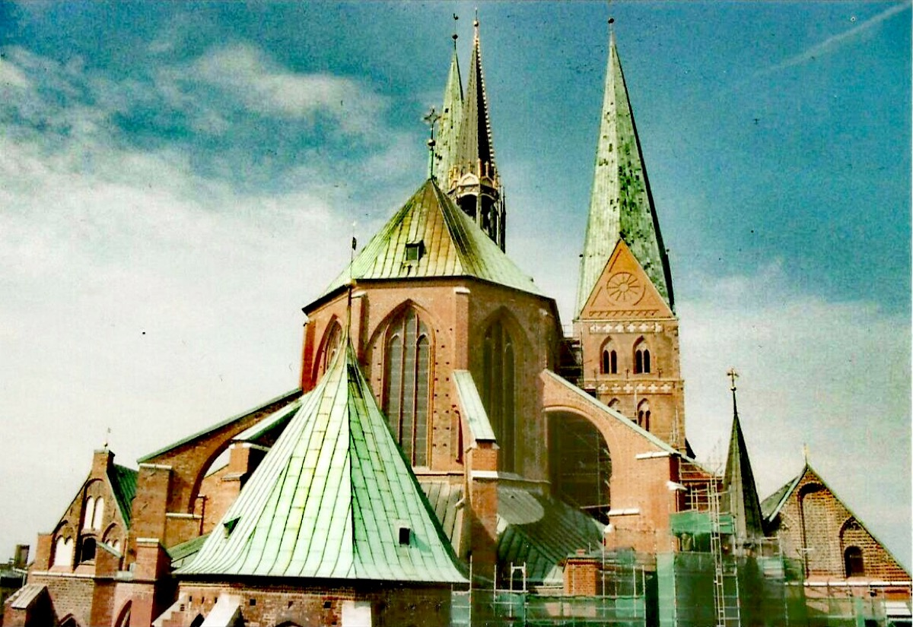

Lübeck, Free Imperial City

The city then. The old queen of the Hanseatic League — a merchant republic of brick Gothic churches whose wealth had built northern Europe's great musical establishment: the Marienkirche, with its double organs and its endowed civic concerts. No court, no duke: here music answered to commerce and congregation, and Buxtehude had made that answer magnificent for forty years.
What Bach walked to. The Abendmusiken — the famous "evening musics" of the Advent season: large-scale sacred works with orchestra, free to the public, financed by the business community — the nearest thing in the Germany of 1705 to a public concert institution, and in that particular winter mounting extraordinary memorial music for the dead Emperor. Plus the man himself, at the summit of the stylus phantasticus, with a famous instrument and (a live question that season) a post soon to vacate — the event card weighs the succession rumor.
What survives today. The Marienkirche was gutted in the 1942 bombing — its shattered bells lie where they fell, kept as a memorial — and rebuilt; Buxtehude's grave and the organs were lost. The city commemorates its organist with a modern Abendmusiken tradition; the walk itself, Arnstadt to Lübeck, is now a marked long-distance hiking route ("Bachwanderweg" ambitions come and go) — pilgrimage, still.
Wolff, The Learned Musician, ch. 4
Snyder, Dieterich Buxtehude: Organist in Lübeck
→ full bibliography & links